Une parcelle vide
Avant d’investir dans la mise en culture, nos agronomes étudient le terrain, le sol, l’eau, l’accès et les moyens disponibles. Le diagnostic oriente les cultures, le plan d’aménagement et l’ordre des investissements.
LE PROTOCOLE TERRA
Nos agronomes. Notre laboratoire. Notre technologie. Un parcours continu pour comprendre le sol et améliorer chaque saison.
Terra accompagne les nouvelles exploitations comme les fermes existantes, puis renforce ce travail agronomique par la mesure, la connectivité et l’IA. L’objectif : améliorer la productivité, mieux utiliser les ressources et rendre la méthode accessible à de nombreuses fermes.
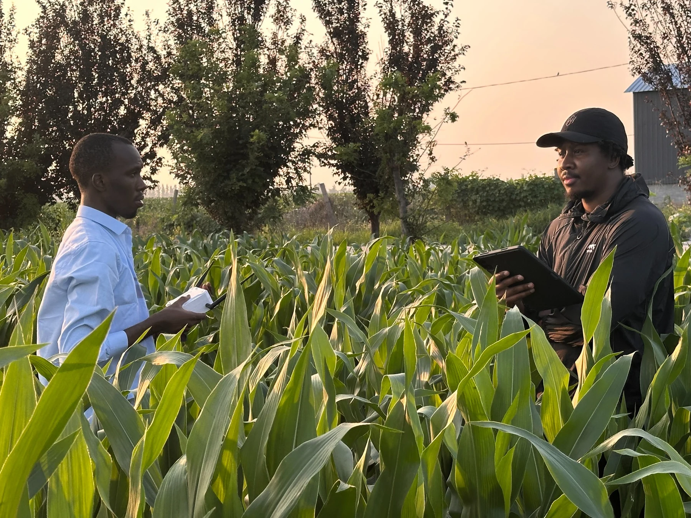
LE RÉSEAU CONNECTÉ TERRA
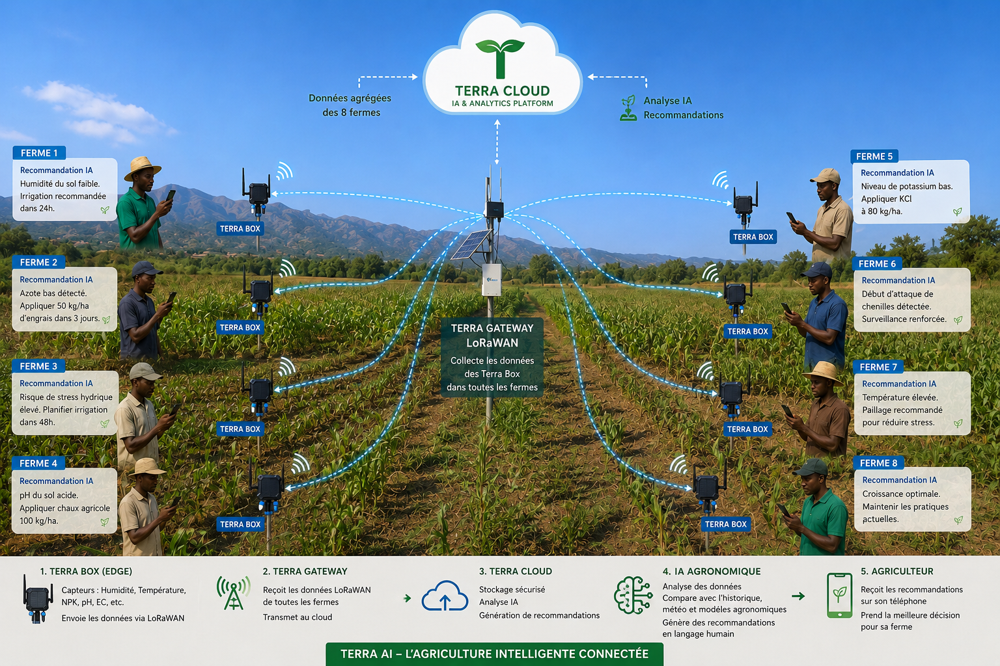
Messages et doses illustratifs. Dans le protocole Terra, les recommandations NPK s’appuient sur les analyses de Terra Lab et la validation de l’agronome. La passerelle dispose d’une connexion internet et l’envoi des SMS utilise le réseau mobile.
DEUX POINTS DE DÉPART. UN PROTOCOLE.
01—03 · DIAGNOSTIQUER ET PLANIFIER
Un agronome Terra visite la parcelle, enregistre ses limites et relève son historique, son accès à l’eau et les objectifs de l’exploitant. Les mesures géoréférencées de conductivité électrique (EC), prises avec le capteur de la Box, aident à distinguer les zones du sol et à choisir des points de prélèvement représentatifs.
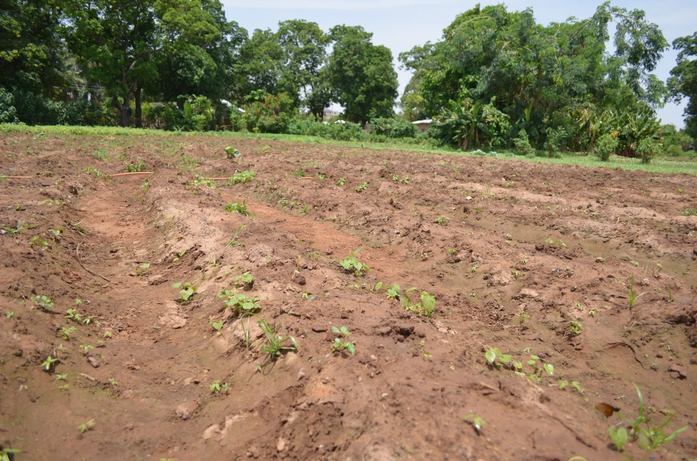
Les échantillons de chaque zone sont identifiés, enregistrés et confiés à Terra Laboratoire Agronomique. Les analyses établissent la référence nutritive : azote, phosphore, potassium, ainsi que le pH, la matière organique et les autres indicateurs retenus selon le sol et la culture. Méthodes, unités et dates de prélèvement accompagnent les résultats.
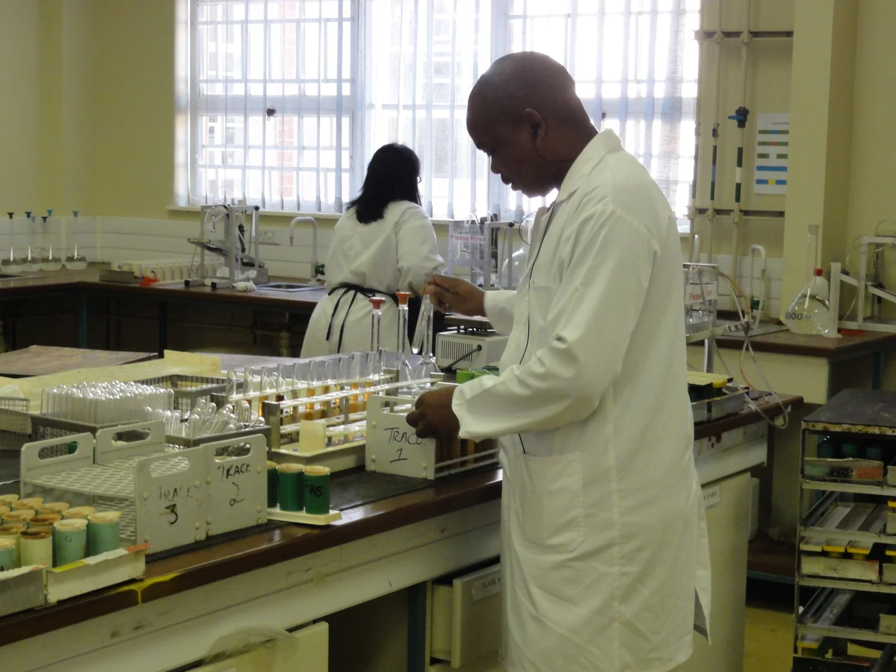
L’agronome Terra croise la carte, les résultats du laboratoire, le climat local et les moyens de l’agriculteur. Ensemble, ils choisissent les cultures et variétés adaptées, établissent le calendrier de saison et définissent la préparation du sol, la nutrition, la gestion de l’eau, la protection des cultures et des objectifs de production réalistes.
04—06 · ÉQUIPER ET ACCOMPAGNER
Les Box sont placées aux emplacements représentatifs retenus après le diagnostic. L’équipe installe les capteurs de sol et de culture, le panneau solaire et la batterie, vérifie les mesures et la couverture radio, puis associe chaque appareil à sa parcelle. L’agriculteur apprend à recevoir les conseils et à joindre son agronome Terra.
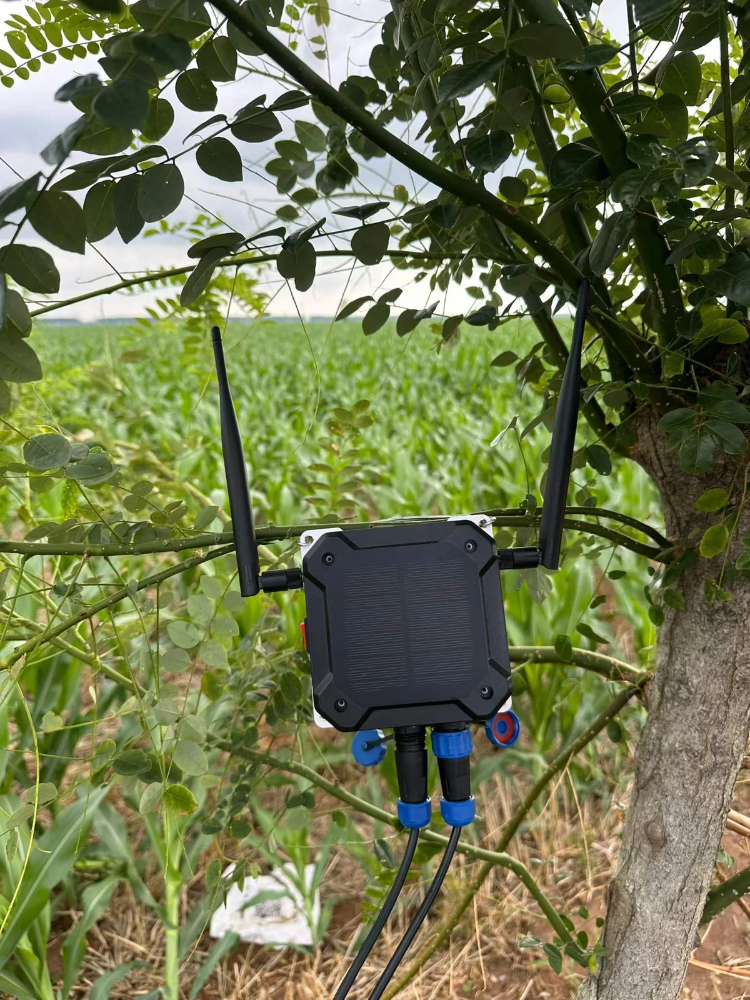
La Box suit l’humidité, la température, le pH et l’EC du sol, complétés par les capteurs de culture et d’atmosphère. Terra rapproche ces observations horodatées de la référence du laboratoire, du stade de culture, du contexte météo et de l’historique de la ferme. L’analyse repère les variations inhabituelles et prépare des conseils à examiner par l’agronome.
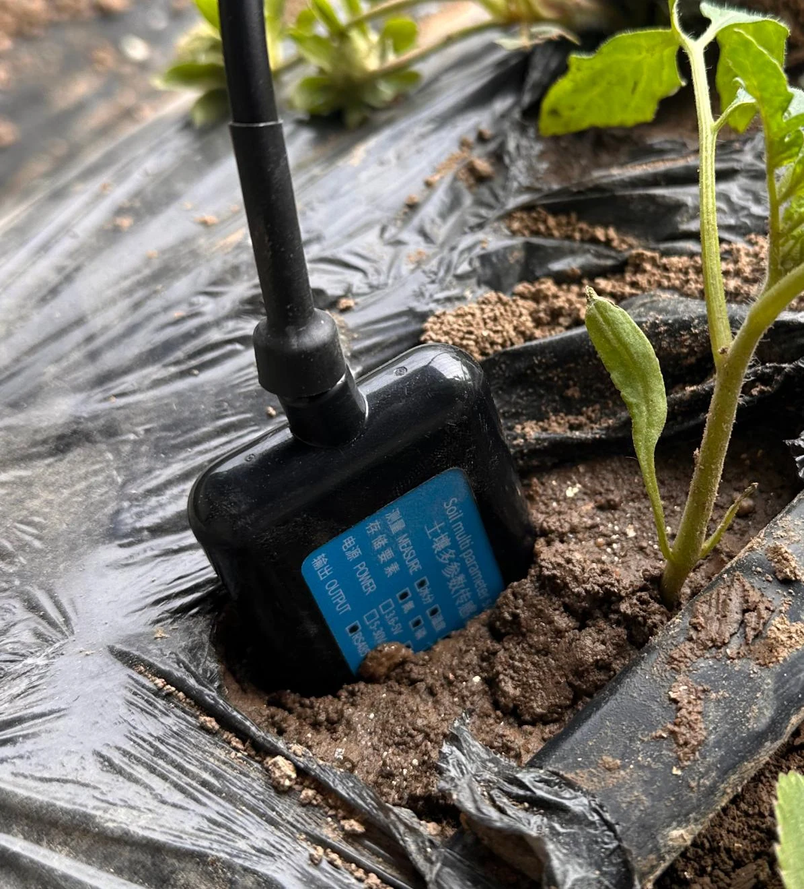
L’agronome Terra vérifie les éléments disponibles, adapte la recommandation aux conditions locales et valide l’action. Un conseil clair arrive par SMS sur le téléphone basique de l’agriculteur. Visites de terrain, observation des cultures et retours de l’exploitant permettent de confirmer la situation et de consigner les interventions réalisées.
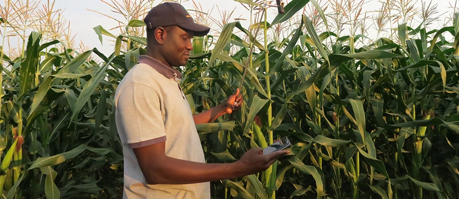
07—10 · MESURER ET AMÉLIORER
L’agriculteur et l’agronome examinent la maturité, la date de récolte, la main-d’œuvre, la manutention et le stockage. Terra rattache la récolte à la bonne parcelle, à la culture et à la saison afin de relire les résultats avec les conditions de croissance et les interventions.
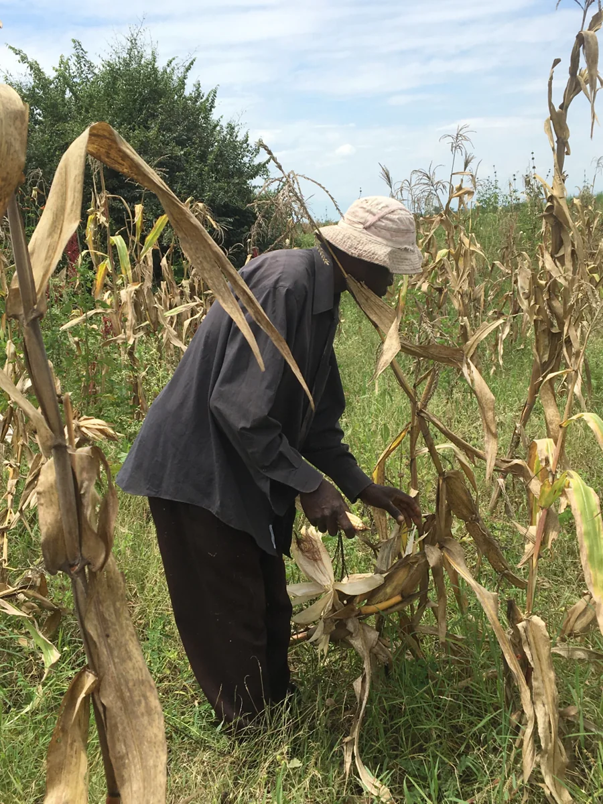
Le poids récolté et la surface récoltée sont enregistrés pour calculer le rendement. Le suivi porte aussi sur l’eau, les intrants, le travail et les coûts réellement documentés, avec la méthode de mesure. Les comparaisons utilisent une référence claire et tiennent compte de la culture, de la saison et de la météo.
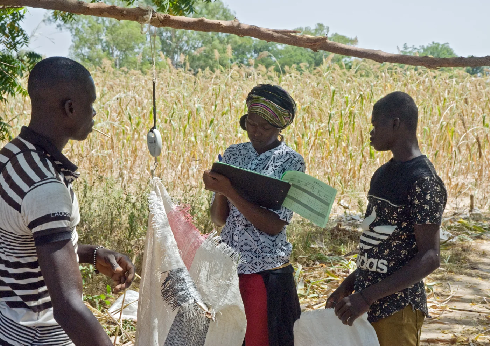
L’agronome compare les résultats au plan, au diagnostic du sol, aux mesures des capteurs et aux pratiques réellement appliquées. Terra aide à identifier les contraintes possibles et les tendances utiles. Les observations de terrain et, si nécessaire, de nouvelles analyses de laboratoire orientent les améliorations à tester.
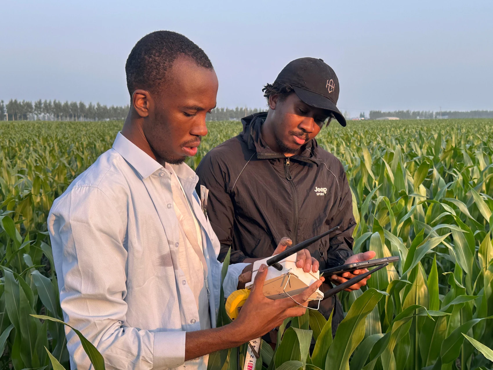
Cartes, rapports de laboratoire, mesures, conseils, interventions et résultats de récolte restent associés à la ferme. La saison suivante commence avec cette connaissance. L’agronome Terra ajuste le plan ; les modèles peuvent progresser à mesure que des données de terrain suffisantes et comparables sont collectées et validées.
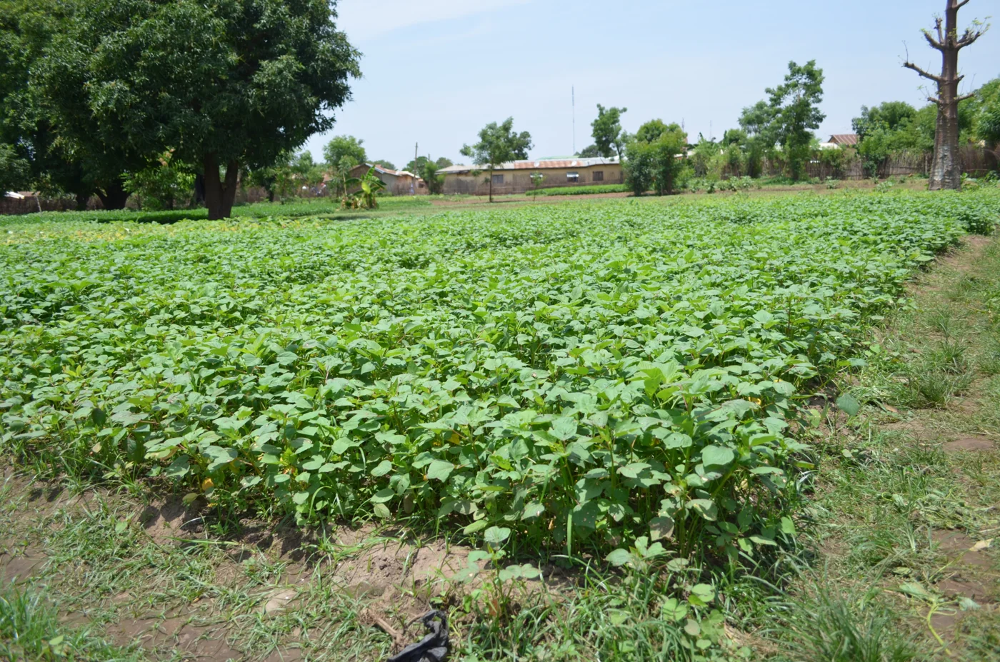
La même parcelle. Plus de connaissances. Un nouveau cycle d’accompagnement agronomique.
Les visuels transmis par Terra AI sont complétés par des photos d’illustration. Les photographies du web montrent des opérations agronomiques dans d’autres fermes et laboratoires. Elles ont été redimensionnées et converties en WebP ; leur affichage peut être recadré par la mise en page.
TERRA LAB
Notre laboratoire relie la chimie du sol aux décisions prises sur le terrain.
Notre laboratoire fait partie intégrante du protocole et travaille avec nos agronomes de terrain. Il fournit la référence analytique qui permet de comprendre la fertilité, d’interpréter les observations des capteurs et de préparer le plan de nutrition de la culture.
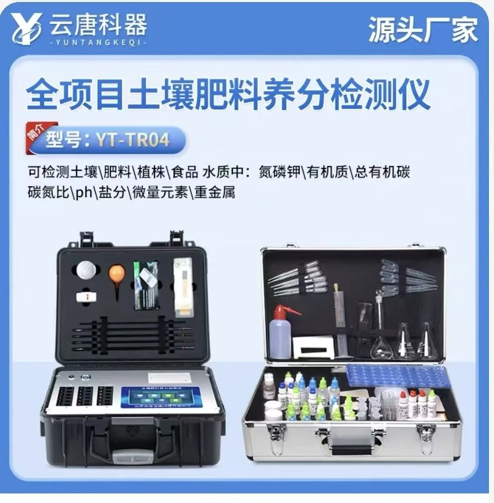
NOS PROPRES AGRONOMES DE TERRAIN
Les agents Terra accompagnent les terrains vides et les fermes actives : diagnostic, prélèvements, planification, formation, visites programmées et examen des alertes. La relation continue après l’installation de la Box.
Adapter les variétés, les dates de semis, les rotations et la récolte au site et aux objectifs de l’exploitant.
Prévoir la préparation du sol, les apports organiques et la nutrition à partir des analyses et des besoins de la culture.
Définir le suivi de l’irrigation, le drainage, la couverture du sol et l’entretien selon l’eau et le matériel disponibles.
Organiser l’observation, la prévention, l’hygiène et une protection des cultures adaptée localement avec l’agronome.
Prévoir la main-d’œuvre, les outils, l’achat des intrants et le budget. Attribuer un responsable et une date à chaque tâche.
Programmer les visites, les contrôles des capteurs et les réexamens au laboratoire ; définir la mesure du rendement, de la qualité et des coûts.
L’IA prépare et priorise. L’agronome vérifie, adapte et valide. L’agriculteur agit et partage ses observations. Cette boucle humaine fait partie du protocole.
LA BOX TERRA SUR LE TERRAIN
PENSÉE POUR LA RÉALITÉ DE LA RDC
Solaire. Sans internet ni carte SIM dans chaque Box de terrain. Des conseils utiles sur un téléphone basique.
Installée directement dans le champ, la Box autonome réunit capteurs, électronique basse consommation, panneau solaire et batterie rechargeable. Elle suit les conditions réelles de culture, de jour comme de nuit, avec une autonomie vérifiée pour les conditions d’installation.
AU CŒUR DE LA BOX TERRA
Le module au cœur de la Box Terra associe le calcul local à trois liaisons sans fil complémentaires.
IA EMBARQUÉE · ESP32-S3
L’ESP32-S3 fournit le calcul local pour l’acquisition des capteurs, la préparation des données, les règles configurées et des modèles d’IA légers. Ses instructions vectorielles facilitent les calculs de réseaux neuronaux et de traitement du signal. Terra associe cette couche embarquée à l’analyse cloud, à l’historique de la ferme et au jugement de l’agronome.
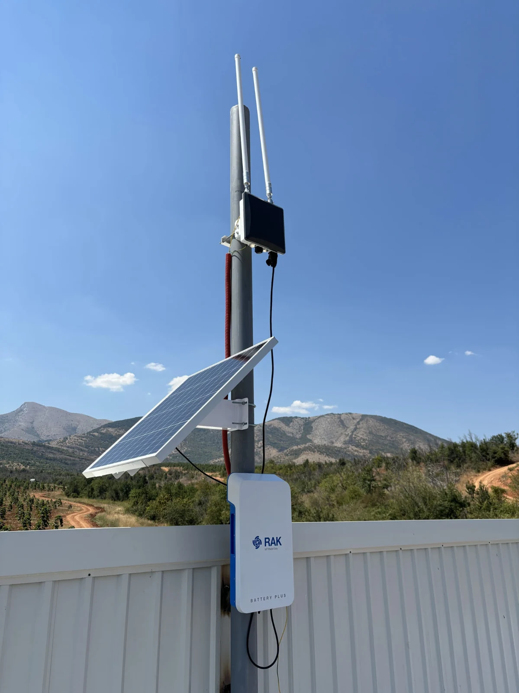
LA PASSERELLE SOLAIRE MUTUALISÉE
Passerelle extérieure LoRaWAN alimentée par l’énergie solaire
L’architecture réseau Terra s’appuie sur la famille WisGate Edge Pro V2 (RAK7289V2 / RAK7289CV2). Associée à Battery Plus et au Solar Panel Kit, elle constitue un point de réception commun aux Box de terrain, là où l’alimentation électrique est peu fiable ou absente.
Dans Terra : plusieurs Box → une passerelle partagée → Terra Cloud. Le solaire rend l’installation indépendante du secteur électrique ; la passerelle utilise une connexion internet pour rejoindre le cloud.
Voir le kit solaire RAKwirelessVOIR LE PROTOCOLE SUR LE TERRAIN
Regardez le déploiement de Terra en plein champ accompagné d’un agronome, puis découvrez l’installation de la Box et les autres démonstrations du projet.
Découvrir toutes les vidéos Terra ↗DÉPLOIEMENT SUR LE TERRAIN
Un déploiement Terra accompagné d’un agronome, au plus près de l’environnement de travail de l’agriculteur.
Voir la vidéo ↗DE LA MESURE AU MESSAGE UTILE
Terra transforme les signaux du champ en questions que l’agronome peut traiter : quand vérifier l’irrigation, comment ajuster la nutrition et quels risques nécessitent une observation de la culture.
AGENT TERRA AI → AGRONOME
L’agronome vérifie → adapte → valide. L’agriculteur reçoit ensuite une action claire par SMS.
La connectivité en pratique : LoRa assure la liaison au champ ; une passerelle connectée transmet les données à la plateforme. La réception des SMS exige une couverture mobile pour le téléphone de l’agriculteur. En cas d’interruption de la connexion de la passerelle, la collecte et le contrôle locaux dépendent de la configuration de la Box.
D’UNE FERME À DE NOMBREUSES EXPLOITATIONS
L’ambition nationale commence par un service local reproductible : agronomes Terra formés, cartographie et prélèvements cohérents, notre laboratoire, connectivité mutualisée et dossier de saison pour chaque ferme.
Cartographier, analyser, planifier, observer et enregistrer les premiers résultats.
Zones de sol + laboratoire + capteurs + interventions + récolte.
Utiliser le bilan pour affiner les pratiques et tester les améliorations.
Poids récolté ÷ surface récoltée.
Volumes d’irrigation lorsqu’ils sont mesurés.
Produits, quantités et dates d’application.
Dépenses enregistrées et valeur de la récolte.
Ces indicateurs sont à mesurer et ne représentent pas des résultats annoncés. Les gains de productivité et les économies de ressources doivent être démontrés dans les pilotes locaux et comparés selon une méthode documentée.
Terra relie chaque ferme à son agronome, à ses résultats de laboratoire et à ses appareils. À mesure du déploiement, cette structure commune peut coordonner les visites, les besoins en intrants, la préparation des récoltes et l’accompagnement des coopératives et des régions. Les accès par rôle permettent aux institutions, chercheurs et prestataires d’utiliser les informations adaptées, avec autorisation pour les données identifiantes des exploitations.
Découvrir l’écosystème agricole connectéUNE BASE AGRONOMIQUE ÉPROUVÉE, RENFORCÉE PAR TERRA
Le protocole Terra s’appuie sur un accompagnement agronomique établi : diagnostic, analyses de laboratoire, plans adaptés localement, suivi et apprentissage avec les agriculteurs. Terra y ajoute la mesure continue, la connectivité, l’historique de la ferme et l’interprétation assistée par IA.
L’approche FAO Smart Farming accompagne les petits exploitants par les bonnes pratiques horticoles, des technologies abordables et une gestion efficace des ressources. Elle comprend l’appui technique local, les intrants de qualité, l’accès aux marchés et les outils numériques. Ces principes éclairent la combinaison de l’agronomie de terrain et des outils connectés proposée par Terra.
FAO · Découvrir Smart Farming (EN) ↗Le modèle STB développé avec la China Agricultural University rapproche chercheurs agronomes et agriculteurs par le travail de terrain, l’apprentissage pratique et l’innovation adaptée localement. Des publications étudient son intérêt pour le développement agricole durable en Afrique.
FAO · Comprendre les Science and Technology Backyards (EN) ↗Jiao et al., 2020 · Modèle STB et Afrique (EN) ↗Il s’agit de références méthodologiques. Le protocole Terra est l’intégration de l’agronomie et de la technologie proposée par Terra ; ces références ne constituent pas une approbation ou une certification de la FAO ou de la CAU.
LE PROJET EN PRATIQUE
Le schéma fourni réunit les dix étapes du protocole. Le support d’essais de terrain illustre le travail du projet pour traduire les mesures en messages agronomiques.
Les doses et rendements du schéma sont illustratifs. La présentation de Pékin documente une démonstration de prototype ; le protocole actuel s’appuie sur Terra Lab pour les mesures NPK de référence.
COMMENÇONS PAR LE TERRAIN
Échangez avec l’équipe Terra sur votre parcelle, vos cultures ou un groupe d’exploitations.